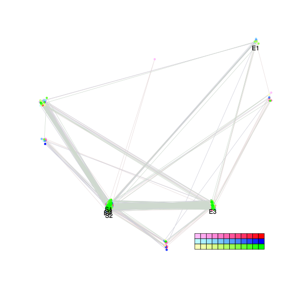
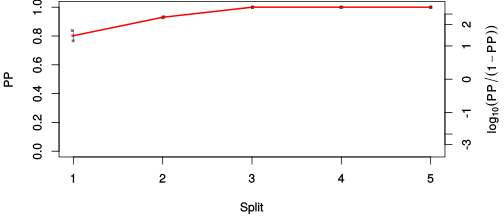
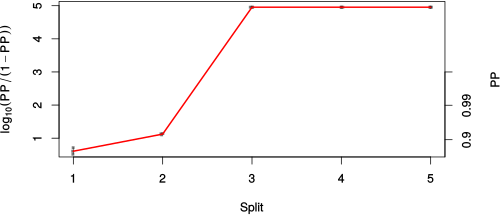

| chain # | burnin | subsample | Iterations (remaining) | command line | subdirectory | directory |
|---|---|---|---|---|---|---|
| 1 | 10000 | 1 | 90000 | bali-phy E1_AA_red3_Manatees_BetaGamma.fas -s 12435 -n Manatees_BetaGamma_c1 | Manatees_BetaGamma_c1-1 | /DATA/work/ONCOGENEVOL/database/trees/Bali-Phy/red3/E1 |
| 2 | 10000 | 1 | 90000 | bali-phy E1_AA_red3_Manatees_BetaGamma.fas -s 53263 -n Manatees_BetaGamma_c2 | Manatees_BetaGamma_c2-1 | /DATA/work/ONCOGENEVOL/database/trees/Bali-Phy/red3/E1 |
| 3 | 10000 | 1 | 90000 | bali-phy E1_AA_red3_Manatees_BetaGamma.fas -s 78363 -n Manatees_BetaGamma_c3 | Manatees_BetaGamma_c3-1 | /DATA/work/ONCOGENEVOL/database/trees/Bali-Phy/red3/E1 |
| P(data|M) = -9259.201 +- 0.536 | Complete sample: 9 topologies | 95% Bayesian credible interval: 4 topologies |

Phylogeny Distribution

| Partition support: Summary |
| Partition support graph: SVG |
| 50% consensus | Newick (+PP) | SVG | |||||
| 66% consensus | Newick (+PP) | SVG | |||||
| 80% consensus | Newick (+PP) | SVG | |||||
| 90% consensus | Newick (+PP) | SVG | |||||
| 95% consensus | Newick (+PP) | SVG | |||||
| 99% consensus | Newick (+PP) | SVG | |||||
| 100% consensus | Newick (+PP) | SVG | |||||
| MAP | Newick (+PP) | SVG | |||||
| greedy | Newick (+PP) | SVG |
{kind=link}
{kind=link}
{kind=link}
{kind=link}
{kind=link}
{kind=link}
{kind=link}
{kind=link}
Alignment Distribution
Partition 1
| Diff | Min. %identity | # Sites | Constant | Informative | ||||
|---|---|---|---|---|---|---|---|---|
| Initial | FASTA | HTML | Diff | 4.44% | 628 | 1 (0.159%) | 252 (40.1%) | |
| Best (WPD) | FASTA | HTML | AU | 38.7% | 741 | 109 (14.7%) | 321 (43.3%) |


Mixing
| burnin (scalar) | ESS (scalar) | ESS (partition) | ASDSF | MSDSF | PSRF-CI80% | PSRF-RCF |
|---|---|---|---|---|---|---|
| 1155 | 448.9 | 1125.345 | 0.012 | 0.036 | 1.002 | 1.005 |
Projection of RF distances for the first 3 chains3D | Variation of split PPs across chains |
Scalar variables
| Statistic | Median | 95% BCI | ACT | ESS | burnin | PSRF-CI80% | PSRF-RCF |
|---|---|---|---|---|---|---|---|
| prior | -678 | (-740.1, -620.4) | 182.7 | 1477 | 426 | 1.002 | 1.001 |
| prior_A1 | -666.1 | (-727.6, -610.3) | 150.3 | 1796 | 352 | 1.001 | 0.9996 |
| likelihood | -9215 | (-9256, -9176) | 60.2 | 4484 | 204 | 1.001 | 0.9954 |
| logp | -9894 | (-9938, -9853) | 299.7 | 900 | 1155 | 1.001 | 1.004 |
| Heat.beta | 1 | ||||||
| Scale1 | 3.006 | (1.405, 5.484) | 1.008 | 267991 | 70 | 1 | 1 |
| S1.F.pi.A | 0.07262 | (0.06246, 0.0831) | 8.664 | 31163 | 257 | 1 | 0.9956 |
| S1.F.pi.R | 0.03961 | (0.03188, 0.04786) | 8.747 | 30867 | 423 | 0.9998 | 1.001 |
| S1.F.pi.N | 0.0404 | (0.03346, 0.04783) | 10.94 | 24691 | 418 | 1 | 1.004 |
| S1.F.pi.D | 0.05947 | (0.05025, 0.06934) | 7.95 | 33960 | 282 | 1 | 0.9997 |
| S1.F.pi.C | 0.04493 | (0.03501, 0.05546) | 8.64 | 31250 | 501 | 0.9997 | 1.001 |
| S1.F.pi.Q | 0.0372 | (0.03064, 0.04432) | 9.411 | 28691 | 426 | 0.9998 | 0.9995 |
| S1.F.pi.E | 0.05784 | (0.04921, 0.06709) | 8.779 | 30755 | 383 | 0.9993 | 0.9928 |
| S1.F.pi.G | 0.06738 | (0.05562, 0.07965) | 8.471 | 31872 | 417 | 1 | 0.995 |
| S1.F.pi.H | 0.02343 | (0.01789, 0.02945) | 8.115 | 33272 | 240 | 0.9999 | 1 |
| S1.F.pi.I | 0.04507 | (0.03689, 0.05355) | 8.691 | 31065 | 432 | 0.9997 | 1.005 |
| S1.F.pi.L | 0.09945 | (0.08638, 0.1131) | 9.122 | 29598 | 215 | 1 | 1.002 |
| S1.F.pi.K | 0.04986 | (0.0417, 0.05863) | 8.293 | 32557 | 298 | 0.9997 | 1.002 |
| S1.F.pi.M | 0.02407 | (0.01864, 0.03016) | 8.152 | 33120 | 556 | 1 | 0.9995 |
| S1.F.pi.F | 0.0517 | (0.04213, 0.06209) | 11.08 | 24369 | 484 | 1 | 0.9982 |
| S1.F.pi.P | 0.04292 | (0.03415, 0.05269) | 11.72 | 23037 | 513 | 1 | 0.9961 |
| S1.F.pi.S | 0.06827 | (0.05872, 0.07829) | 8.608 | 31364 | 175 | 0.9995 | 1.003 |
| S1.F.pi.T | 0.0608 | (0.05195, 0.07026) | 7.968 | 33887 | 340 | 1 | 0.9949 |
| S1.F.pi.W | 0.01326 | (0.008149, 0.01909) | 8.136 | 33187 | 563 | 1.001 | 0.996 |
| S1.F.pi.Y | 0.03243 | (0.02494, 0.04039) | 8.14 | 33170 | 271 | 1 | 0.9956 |
| S1.F.pi.V | 0.06668 | (0.05664, 0.07715) | 8.508 | 31736 | 497 | 1 | 1.003 |
| I1.RS07.meanIndelLengthMinus1 | 2.161 | (1.436, 3.053) | 289.3 | 933 | 411 | 1 | 0.994 |
| I1.RS07.logLambda | -3.892 | (-4.135, -3.642) | 6.428 | 42003 | 156 | 1.001 | 1.001 |
| |A1| | 739 | (717, 762) | 440.6 | 612 | 183 | 0.9438 | 0.9856 |
| #indels1 | 82 | (73, 91) | 77.92 | 3465 | 299 | 0.8571 | 0.9996 |
| |indels1| | 260 | (214, 306) | 601.5 | 448 | 897 | 0.9779 | 0.992 |
| #substs1 | 1585 | (1563, 1607) | 211.2 | 1278 | 97 | 0.9886 | 0.9929 |
| Scale1*|T| | 3.364 | (3.178, 3.553) | 4.335 | 62278 | 160 | 0.9999 | 1.002 |
| |A| | 739 | (717, 762) | 440.6 | 612 | 183 | 0.9438 | 0.9856 |
| #indels | 82 | (73, 91) | 77.92 | 3465 | 299 | 0.8571 | 0.9996 |
| |indels| | 260 | (214, 306) | 601.5 | 448 | 897 | 0.9779 | 0.992 |
| #substs | 1585 | (1563, 1607) | 211.2 | 1278 | 97 | 0.9886 | 0.9929 |
| |T| | 1.12 | (0.5016, 1.951) | 1 | 270003 | 70 | 1 | 1.001 |